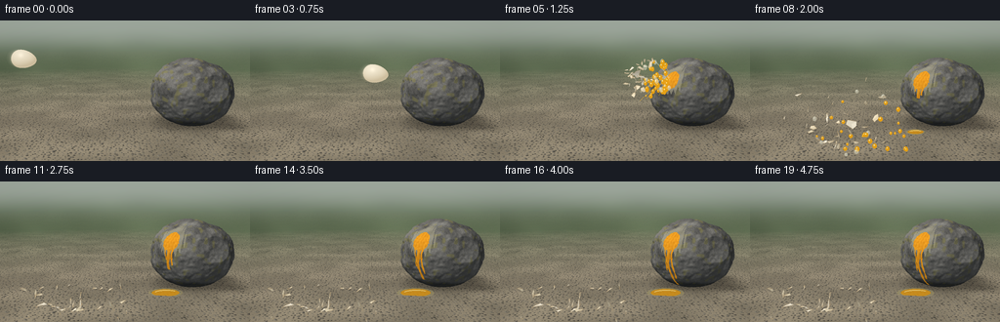
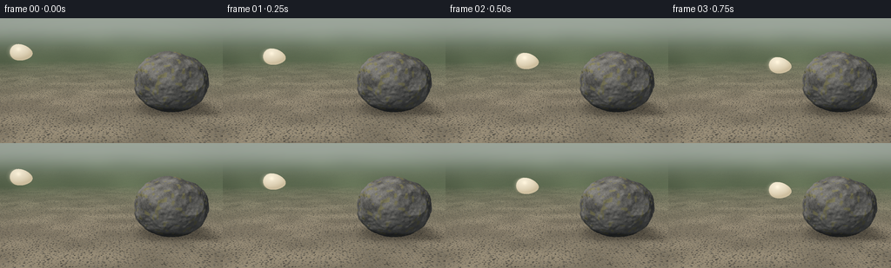

CODING AGENTS AS PIXEL WORLD MODELS
traex/GPT-6.1-Sol · phygen_131
点击播放 · 原生 RGB 像素
逐轮保存的候选
回放视频、检查图与代码变化。
每份候选均可单独播放。实际图片检查记录在下方工具轨迹中。
候选 01播放与检查图
点击播放 · 原生 RGB 像素


展开代码变化
--- 上一保存版本
+++ 本次保存版本
@@ -0,0 +1,412 @@
+"""Deterministic, text-only, mathematical rendering of an egg/rock collision."""
+from pathlib import Path
+import math
+import numpy as np
+from PIL import Image, ImageDraw, ImageFilter
+import artifact_io
+
+ROOT = Path(__file__).resolve().parent
+W, H, SS = 256, 144, 3
+w, h = W*SS, H*SS
+rng = np.random.default_rng(131)
+
+# A fixed macro camera, sunlight, and actual surface intersections.
+cam = np.array([0., 3.0, 10.])
+target = np.array([0., 1.35, 0.])
+forward = target-cam; forward /= np.linalg.norm(forward)
+right = np.cross(forward, [0.,1.,0.]); right /= np.linalg.norm(right)
+up = np.cross(right, forward)
+focal = h/(2*np.tan(np.deg2rad(31)/2))
+Y,X = np.mgrid[:h,:w]
+rays = forward + (X[...,None]+.5-w/2)/focal*right - (Y[...,None]+.5-h/2)/focal*up
+rays /= np.linalg.norm(rays,axis=-1,keepdims=True)
+sun = np.array([-.55,.78,.52]); sun /= np.linalg.norm(sun)
+center = np.array([2.65,1.30,0.])
+radii = np.array([1.63,1.37,1.30])
+
+
+def hashv(x,y,z=0):
+ return np.mod(np.sin(x*127.1+y*311.7+z*74.7)*43758.5453,1.)
+
+
+def noise(p):
+ a=np.floor(p); t=p-a; t=t*t*(3-2*t)
+ val=np.zeros(p.shape[:-1])
+ for i in range(2):
+ for j in range(2):
+ for k in range(2):
+ weight=(t[...,0] if i else 1-t[...,0])*(t[...,1] if j else 1-t[...,1])*(t[...,2] if k else 1-t[...,2])
+ val += weight*hashv(a[...,0]+i,a[...,1]+j,a[...,2]+k)
+ return val
+
+# Clipped, uneven granite geometry, not a smooth sphere.
+planes=[]
+for n,d in [([-1,.15,.25],.92),([-.35,.88,.25],.91),([.35,.92,-.1],.91),([.9,.15,.5],.95),([.4,.25,.92],.94),([-.72,-.42,.55],.96),([.4,-.5,.7],.97)]:
+ n=np.array(n,float); n/=np.linalg.norm(n); planes.append((n,d))
+
+
+def rock_sdf(p):
+ q=(p-center)/radii
+ d=np.linalg.norm(q,axis=-1)-1
+ for n,limit in planes:
+ d=np.maximum(d,q@n-limit)
+ # Large random undulations and sharp mineral-scale ridges.
+ rough=.075*(noise(p*3.1+7.3)-.5)+.028*(noise(p*9.4+13.2)-.5)
+ return d*1.30+rough
+
+
+def project(p):
+ p=np.asarray(p); v=p-cam
+ z=v@forward
+ return np.stack((w/2+focal*(v@right)/z,h/2-focal*(v@up)/z),axis=-1),z
+
+
+def sky_ground():
+ # Out-of-focus olive woodland and a bright warm gray outdoor floor.
+ uv=np.stack((X/w*7,Y/h*7,np.full_like(X,3,dtype=float)),axis=-1)
+ n=noise(uv)+.35*noise(uv*2.7)
+ sky=np.empty((h,w,3))
+ sky[:]=[159,169,158]
+ foliage=np.clip((Y/h-.09)*5.5,0,1)
+ leaf=np.stack((69+n*30,83+n*32,61+n*25),axis=-1)
+ sky=sky*(1-foliage[...,None])+leaf*foliage[...,None]
+ sky=np.array(Image.fromarray(np.uint8(np.clip(sky,0,255))).filter(ImageFilter.GaussianBlur(7*SS))).astype(float)
+ tg=-cam[1]/rays[...,1]
+ valid=(tg>0)&(rays[...,1]<-.012)
+ p=cam+np.maximum(tg,0)[...,None]*rays
+ p=np.nan_to_num(p)
+ coarse=noise(p*.75)
+ fine=noise(p*22)+.35*noise(p*67)
+ base=np.stack((116+coarse*34+fine*12,108+coarse*31+fine*11,91+coarse*26+fine*10),axis=-1)
+ # Cell-based rounded pieces of grit, cast into the plane procedurally.
+ gx=p[...,0]*8; gz=p[...,2]*8
+ ix=np.floor(gx); iz=np.floor(gz)
+ best=np.ones((h,w))*10; tone=np.zeros((h,w)); nx=np.zeros((h,w)); nz=nx.copy(); rad=nx.copy()
+ for i in [-1,0,1]:
+ for j in [-1,0,1]:
+ hx=hashv(ix+i,iz+j,2); hz=hashv(ix+i,iz+j,8)
+ dx=gx-(ix+i+.14+.72*hx); dz=gz-(iz+j+.14+.72*hz)
+ rr=.13+.21*hashv(ix+i,iz+j,5)
+ d=np.sqrt(dx*dx+dz*dz)/rr
+ m=d<best
+ best[m]=d[m]; tone[m]=hashv(ix+i,iz+j,11)[m]; nx[m]=dx[m]/rr[m]; nz[m]=dz[m]/rr[m]
+ inside=best<1
+ ny=np.sqrt(np.maximum(0,1-best**2))
+ shade=np.clip(-.42*nx+.5*ny+.3*nz,.05,1)
+ col=(83+tone*60)[...,None]*np.array([1.07,1.02,.91])* (.65+.5*shade[...,None])
+ base[inside]=col[inside]
+ # Soft substantial boulder shadow, stretched away from the upper-left sun.
+ shadow=np.exp(-((p[...,0]-3.05)/1.85)**4-((p[...,2]+.3)/1.25)**4)
+ base*=1-.42*shadow[...,None]
+ haze=np.clip((tg-12)/31,0,.92)
+ base=base*(1-haze[...,None])+sky*haze[...,None]
+ sky[valid]=base[valid]
+ depth=np.where(valid,tg,1e5)
+ return np.clip(sky,0,255),depth
+
+print('Rendering rugged rock and gravel...',flush=True)
+background,depth=sky_ground()
+# Bound ray marching to the rock's sphere and the ground.
+co=cam-center
+b=np.sum(rays*co,axis=-1)
+c=co@co-2.45**2
+disc=b*b-c
+active=(disc>0)
+t0=-b-np.sqrt(np.maximum(disc,0)); t1=-b+np.sqrt(np.maximum(disc,0))
+active &= (t1>0)&(t0<depth)
+idx=np.flatnonzero(active)
+r=rays.reshape(-1,3)[idx]
+t=np.maximum(t0.reshape(-1)[idx],0)
+tend=np.minimum(t1.reshape(-1)[idx],depth.reshape(-1)[idx])
+alive=np.ones(len(idx),bool); hit=np.zeros(len(idx),bool)
+for _ in range(100):
+ ids=np.flatnonzero(alive)
+ if len(ids)==0: break
+ ps=cam+t[ids,None]*r[ids]
+ d=rock_sdf(ps)
+ got=d<.0015
+ hit[ids[got]]=True; alive[ids[got]]=False
+ advance=ids[~got]
+ t[advance]+=np.maximum(d[~got]*.66,.001)
+ alive[advance]&=t[advance]<tend[advance]
+hidx=idx[hit]
+P=cam+t[hit,None]*r[hit]
+N=np.empty_like(P)
+eps=.004
+for j in range(3):
+ dp=np.zeros(3); dp[j]=eps
+ N[:,j]=(rock_sdf(P+dp)-rock_sdf(P-dp))/(2*eps)
+N/=np.linalg.norm(N,axis=-1,keepdims=True)
+base_noise=noise(P*3.5)
+fine=noise(P*38)
+grain=noise(P*107)
+stratum=np.sin(P[:,1]*19+noise(P*2.3)*9+P[:,0]*3)
+cracks=np.exp(-np.abs(np.sin(P[:,0]*9.5+P[:,1]*10+noise(P*5)*5))*35)
+val=71+base_noise*49+fine*24+(grain-.5)*14+stratum*3-cracks*19
+rockcol=np.stack((val*1.03,val*1.015,val*.97),axis=-1)
+lichen=np.clip((noise(P*7+43)-.67)*5,0,.6)
+rockcol=rockcol*(1-lichen[:,None])+np.array([135,130,80])*lichen[:,None]
+light=np.clip(N@sun,0,1)
+illum=.42+.66*light
+occlusion=np.clip(P[:,1]/.38,.60,1)
+rockcol*=illum[:,None]*occlusion[:,None]
+# Subtle cool skylight on shaded facets.
+rockcol += (1-light[:,None])*np.array([0,2,4])
+background.reshape(-1,3)[hidx]=rockcol
+depth.reshape(-1)[hidx]=t[hit]
+
+# Exact first contact point along the throw direction.
+impact_y, impact_z = 1.94,.86
+lo,hi=.4,2.6
+for _ in range(40):
+ mid=(lo+hi)/2
+ if rock_sdf(np.array([[mid,impact_y,impact_z]]))[0]>0:lo=mid
+ else:hi=mid
+impact=np.array([hi,impact_y,impact_z])
+egg_center=impact-np.array([.46,0,0])
+impact_uv,_=project(impact)
+phi_hit=np.arctan2((impact_z-center[2])/radii[2],(impact[0]-center[0])/radii[0])
+phi=np.arctan2((P[:,2]-center[2])/radii[2],(P[:,0]-center[0])/radii[0])
+dphi=(phi-phi_hit+np.pi)%(2*np.pi)-np.pi
+print('Contact at screen pixel',impact_uv/SS,flush=True)
+
+# Irregular porcelain-white fragments: fixed shapes, actual ballistic trajectories.
+shards=[]
+for i in range(32):
+ a=rng.uniform(0,2*np.pi)
+ offset=np.array([rng.uniform(-.4,.02),np.sin(a)*.25,np.cos(a)*.24])
+ vel=np.array([-rng.uniform(.8,3.7),rng.uniform(-1.0,3.6),rng.uniform(-.3,2.1)])
+ if i<5:vel=np.array([-rng.uniform(1,2.7),rng.uniform(1.2,2.6),rng.uniform(.7,1.6)])
+ size=rng.uniform(.065,.15)*(1.5 if i<5 else 1)
+ angles=np.linspace(0,2*np.pi,6)[:-1]+rng.uniform(-.22,.22,5)
+ radi=rng.uniform(.65,1.2,5)*size
+ shape=np.stack((np.cos(angles)*radi,np.sin(angles)*radi*.8,np.ones(5)*0),axis=-1)
+ shape[:,2]=.16*size*(shape[:,0]/size)**2
+ shards.append((egg_center+offset,vel,shape,rng.uniform(0,6.28,3),rng.uniform(-7,7,3),i))
+
+drops=[]
+for i in range(55):
+ a=rng.uniform(0,6.28)
+ velocity=np.array([-rng.uniform(.25,3.8),rng.uniform(-1.1,3.6),rng.uniform(.1,2.4)])
+ drops.append((impact+np.array([-.08,rng.uniform(-.1,.1),.08]),velocity,rng.uniform(.021,.070),i%4!=0))
+
+
+def trajectory(p,v,age,g=6.8):
+ """Parabola, ground restitution, and rapid frictional settling."""
+ hit_time=(v[1]+np.sqrt(v[1]**2+2*g*max(p[1]-.04,0)))/g
+ if age<=hit_time:
+ q=p+v*age; q[1]-=.5*g*age*age
+ return q,False
+ dt=age-hit_time
+ q=p+v*hit_time; q[1]=.045
+ vy=(g*hit_time-v[1])*.19
+ bounce=2*vy/g
+ travel=.27*(1-np.exp(-3.4*dt))
+ q[0]+=v[0]*travel; q[2]+=v[2]*travel
+ if dt<bounce:q[1]+=(vy*dt-.5*g*dt*dt)
+ return q,dt>=bounce
+
+
+def rotation(a):
+ x,y,z=a
+ Rx=np.array([[1,0,0],[0,np.cos(x),-np.sin(x)],[0,np.sin(x),np.cos(x)]])
+ Ry=np.array([[np.cos(y),0,np.sin(y)],[0,1,0],[-np.sin(y),0,np.cos(y)]])
+ Rz=np.array([[np.cos(z),-np.sin(z),0],[np.sin(z),np.cos(z),0],[0,0,1]])
+ return Rz@Ry@Rx
+
+
+def composite(im,layer,z):
+ arr=np.asarray(layer).astype(float)
+ a=arr[...,3]/255
+ a*= z<depth+.035
+ im[:]=im*(1-a[...,None])+arr[...,:3]*a[...,None]
+
+
+def draw_egg(im,p,angle=-.14,opacity=1):
+ # A smoothly shaded asymmetric ovoid, its narrower pole leading the throw.
+ uv,z=project(p)
+ scale=focal/z
+ rx=.46*scale; ry=.325*scale
+ x0=max(0,int(uv[0]-rx*1.3));x1=min(w,int(uv[0]+rx*1.3+1))
+ y0=max(0,int(uv[1]-rx*1.3));y1=min(h,int(uv[1]+rx*1.3+1))
+ yy,xx=np.mgrid[y0:y1,x0:x1]
+ dx=xx+.5-uv[0];dy=yy+.5-uv[1]
+ u=(np.cos(angle)*dx+np.sin(angle)*dy)/rx
+ v=(-np.sin(angle)*dx+np.cos(angle)*dy)/ry
+ taper=1-.19*u
+ vv=v/taper
+ rr=u*u+vv*vv
+ mask=rr<=1
+ nz=np.sqrt(np.maximum(0,1-rr))
+ nx=u; ny=vv
+ lighting=np.clip(-.43*nx-.62*ny+.7*nz,0,1)
+ texture=hashv(xx,yy,6)-.5
+ col=np.stack((207+lighting*37+texture*2,192+lighting*42+texture*2,160+lighting*50+texture*2),axis=-1)
+ spec=np.exp(-((u+.27)**2/.04+(vv+.35)**2/.065))*14
+ col+=spec[...,None]
+ a=mask.astype(float)*opacity
+ patch=im[y0:y1,x0:x1]
+ patch[:]=patch*(1-a[...,None])+col*a[...,None]
+
+
+def stain(im,age):
+ if age<0:return
+ # Splashed liquid conforms to the actual visible irregular rock surface.
+ grow=1-np.exp(-(age+.055)*7)
+ v=P[:,1]-impact_y
+ wave=noise(P*24+70)
+ width=.09+.22*grow
+ radial=np.sqrt((dphi/width)**2+(v/(.24+.25*grow))**2)
+ white=(radial<(1+.18*np.sin(dphi*67)+.16*wave))
+ wetalpha=white*.44
+ rc=rockcol.copy()
+ rc=rc*(1-wetalpha[:,None])+np.array([191,185,151])*wetalpha[:,None]
+ yolkcore=np.sqrt((dphi/(width*.66))**2+((v+.06)/(.19+.11*grow))**2)
+ core=yolkcore<(.97+.16*wave)
+ # Thick, glossy orange yolk collects, while narrow streams run down the face.
+ fall=min(impact_y-.12,.18+age*.54)
+ trails=np.zeros(len(P),bool)
+ for off,tw,speed in [(-.095,.025,.82),(.02,.041,1.0),(.105,.017,.66)]:
+ length=min(fall*speed,impact_y-.1)
+ bend=off+.026*np.sin(v*5+off*15)
+ trails|=(np.abs(dphi-bend)<tw*(1+.18*np.sin(v*17)))&(v<-.09)&(v>-length)
+ ym=core|trails
+ gold=np.stack((223+wave*20,135+wave*27,13+wave*16),axis=-1)
+ gold*= (.73+.35*light[:,None])
+ gleam=np.maximum(0,np.sin(dphi*74+v*12))**16*(core|trails)*24
+ gold+=gleam[:,None]*np.array([1,1,.72])
+ rc[ym]=gold[ym]*.9+rc[ym]*.1
+ # Wet, transparent egg white surrounding the yolk.
+ im.reshape(-1,3)[hidx]=rc
+
+
+def draw_pool(im,age):
+ if age<.6:return
+ grow=np.clip((age-.6)/1.3,0,1)
+ p=np.array([impact[0]-.22,.012,impact[2]+.25])
+ uv,z=project(p)
+ rx=(.17+.37*grow)*focal/z;ry=rx*.25
+ overlay=Image.new('RGBA',(w,h));d=ImageDraw.Draw(overlay)
+ d.ellipse((uv[0]-rx*1.25,uv[1]-ry*1.3,uv[0]+rx*1.25,uv[1]+ry*1.3),fill=(169,159,103,105))
+ d.ellipse((uv[0]-rx,uv[1]-ry,uv[0]+rx,uv[1]+ry),fill=(213,145,20,220))
+ d.arc((uv[0]-rx*.8,uv[1]-ry*.8,uv[0]+rx*.9,uv[1]+ry*.7),195,320,fill=(250,210,104,205),width=SS)
+ composite(im,overlay,z)
+
+
+def draw_shard(im,entry,age):
+ p,v,shape,orientation,spin,idx=entry
+ q,settled=trajectory(p,v,age)
+ ah=min(age,1.35)
+ R=rotation(orientation+spin*ah)
+ if settled:
+ # Fallen shell pieces remain where they land; edges still visibly curl up.
+ R=rotation(np.array([np.pi/2,0,orientation[2]+spin[2]*ah]))
+ q[1]=.07
+ vertices=shape@R.T+q
+ uv,z=project(vertices)
+ if np.any(z<0) or np.max(uv[:,0])<0 or np.min(uv[:,0])>w:return
+ normal=R[:,2]
+ lighting=.63+.37*abs(normal@sun)
+ color=np.array([236,221,187])*lighting
+ if idx%4==0:color=np.array([248,239,215])*lighting
+ overlay=Image.new('RGBA',(w,h));d=ImageDraw.Draw(overlay)
+ pts=[tuple(x) for x in uv]
+ d.polygon(pts,fill=tuple(np.uint8(color))+(255,))
+ d.line(pts+[pts[0]],fill=(173,150,113,255),width=max(1,SS//2))
+ d.polygon([pts[0],pts[1],tuple(np.mean(uv,axis=0)),pts[-1]],fill=tuple(np.uint8(np.minimum(255,color+13)))+(255,))
+ composite(im,overlay,float(np.mean(z)))
+
+
+def draw_drop(im,entry,age):
+ p,v,size,gold=entry
+ q,settled=trajectory(p,v,age,g=7.7)
+ if settled:return
+ uv,z=project(q); rr=max(.7,size*focal/z)
+ if uv[0]<-10 or uv[0]>w+10 or uv[1]<-10 or uv[1]>h+10:return
+ overlay=Image.new('RGBA',(w,h));d=ImageDraw.Draw(overlay)
+ ry=rr*(1.45 if age<.5 else 1.12)
+ c=(232,161,19,245) if gold else (224,222,199,135)
+ d.ellipse((uv[0]-rr,uv[1]-ry,uv[0]+rr,uv[1]+ry),fill=c)
+ d.ellipse((uv[0]-rr*.5,uv[1]-ry*.62,uv[0],uv[1]-ry*.12),fill=(255,239,165,215) if gold else (255,254,235,175))
+ composite(im,overlay,z)
+
+
+def spray(im,age):
+ if age>.65:return
+ # Fine connected jets in the initial high-force splash, followed by separate drops.
+ overlay=Image.new('RGBA',(w,h));d=ImageDraw.Draw(overlay)
+ for k in range(15):
+ p,v,size,gold=drops[k]
+ points=[]
+ for s in np.linspace(.05,1,12):
+ q=p+v*(age+.06)*s
+ q[1]-=3.5*((age+.06)*s)**2
+ uv,z=project(q);points.append(tuple(uv))
+ color=(235,181,60,int(180*(1-age/.8))) if k%3 else (244,241,219,int(125*(1-age/.8)))
+ d.line(points,fill=color,width=max(1,int(SS*(.8 if k%3 else 1.2))))
+ composite(im,overlay,9.25)
+
+frames=[]
+for fi in range(20):
+ t=fi/4
+ im=background.copy()
+ age=t-1.
+ if age<0:
+ start=np.array([-3.62,2.64,.86])
+ frac=t/1.0
+ p=start*(1-frac)+egg_center*frac
+ # Restrained directional blur conveys the fast, forceful launch.
+ vel=egg_center-start
+ for lag,alpha in [(.030,.045),(.017,.085),(.008,.16)]:
+ draw_egg(im,p-vel*lag,angle=.12,opacity=alpha)
+ draw_egg(im,p,angle=.12)
+ else:
+ stain(im,age)
+ draw_pool(im,age)
+ # Small soft contact shadows beneath airborne/fallen fragments.
+ shad=Image.new('RGBA',(w,h));d=ImageDraw.Draw(shad)
+ for entry in shards:
+ q,settled=trajectory(entry[0],entry[1],age)
+ if q[1]>.9:continue
+ uv,z=project(np.array([q[0]+q[1]*.3,.009,q[2]-q[1]*.15]))
+ rr=SS*(1.4+q[1]*1.8)
+ d.ellipse((uv[0]-rr,uv[1]-rr*.29,uv[0]+rr,uv[1]+rr*.29),fill=(40,33,24,int(70*(1-q[1]/1.2))))
+ shad=shad.filter(ImageFilter.GaussianBlur(SS*.6))
+ composite(im,shad,9.0)
+ if fi==4:
+ # A crushed, cracked shell at contact, never an intact rebounding egg.
+ draw_egg(im,egg_center,angle=.12)
+ ov=Image.new('RGBA',(w,h));d=ImageDraw.Draw(ov)
+ uv,z=project(egg_center)
+ sc=focal/z
+ cracks=[[(.04,-.26),(-.035,-.13),(.08,-.035),(-.04,.075),(.01,.24)],[(.08,-.035),(.21,-.1),(.33,-.075)], [(-.04,.075),(-.18,.12),(-.28,.09)]]
+ for path in cracks:d.line([(uv[0]+a*sc,uv[1]+b*sc) for a,b in path],fill=(87,65,38,255),width=SS)
+ d.ellipse((uv[0]+.15*sc,uv[1]-.18*sc,uv[0]+.46*sc,uv[1]+.20*sc),fill=(226,152,23,255))
+ composite(im,ov,z)
+ spray(im,age)
+ # Back-to-front consistent layering, static rock depth occlusion.
+ objects=[]
+ for e in shards:
+ q,_=trajectory(e[0],e[1],age)
+ _,z=project(q);objects.append((z,0,e))
+ for e in drops:
+ q,_=trajectory(e[0],e[1],age,7.7)
+ _,z=project(q);objects.append((z,1,e))
+ for _,typ,e in sorted(objects,key=lambda k:-k[0]):
+ if typ:draw_drop(im,e,age)
+ else:draw_shard(im,e,age)
+ # Natural lens vignette, warm daylight, no labels or graphic overlays.
+ vignette=1-.09*((X/w-.5)**2+(Y/h-.5)**2)
+ im*=vignette[...,None]
+ frame=Image.fromarray(np.uint8(np.clip(im,0,255))).resize((W,H),Image.Resampling.LANCZOS)
+ frames.append(np.asarray(frame))
+ print('Frame',fi,flush=True)
+frames=np.stack(frames).astype(np.uint8)
+artifact_io.save(frames,ROOT)
+# A conventional RGB video as well as the required lossless frames/player.
+try:
+ import imageio.v2 as imageio
+ imageio.mimwrite(ROOT/'video.mp4',frames,fps=4,codec='libx264',quality=9,macro_block_size=1)
+except ImportError:
+ pass
+print('Saved',frames.shape,flush=True)
可观测工具轨迹
实际执行的命令与返回图片。
命令 1exit 0
/bin/bash -lc 'ls -la && cat prompt.txt && cat GENERATION_RULES.md && cat task_spec.json'
命令 2exit 0
/bin/bash -lc "cat artifact_io.py && python - <<'PY'
import numpy, PIL
print('numpy and PIL available')
PY"命令 3exit 0
/bin/bash -lc "python - <<'PY' import importlib.util for x in ['scipy','imageio','imageio_ffmpeg']: print(x, bool(importlib.util.find_spec(x))) PY"
命令 4exit 0
/bin/bash -lc "cat > generate.py <<'PY'
\"\"\"Deterministic, text-only, mathematical rendering of an egg/rock collision.\"\"\"
from pathlib import Path
import math
import numpy as np
from PIL import Image, ImageDraw, ImageFilter
import artifact_io
ROOT = Path(__file__).resolve().parent
W, H, SS = 256, 144, 3
w, h = W*SS, H*SS
rng = np.random.default_rng(131)
# A fixed macro camera, sunlight, and actual surface intersections.
cam = np.array([0., 3.0, 10.])
target = np.array([0., 1.35, 0.])
forward = target-cam; forward /= np.linalg.norm(forward)
right = np.cross(forward, [0.,1.,0.]); right /= np.linalg.norm(right)
up = np.cross(right, forward)
focal = h/(2*np.tan(np.deg2rad(31)/2))
Y,X = np.mgrid[:h,:w]
rays = forward + (X[...,None]+.5-w/2)/focal*right - (Y[...,None]+.5-h/2)/focal*up
rays /= np.linalg.norm(rays,axis=-1,keepdims=True)
sun = np.array([-.55,.78,.52]); sun /= np.linalg.norm(sun)
center = np.array([2.65,1.30,0.])
radii = np.array([1.63,1.37,1.30])
def hashv(x,y,z=0):
return np.mod(np.sin(x*127.1+y*311.7+z*74.7)*43758.5453,1.)
def noise(p):
a=np.floor(p); t=p-a; t=t*t*(3-2*t)
val=np.zeros(p.shape[:-1])
for i in range(2):
for j in range(2):
for k in range(2):
weight=(t[...,0] if i else 1-t[...,0])*(t[...,1] if j else 1-t[...,1])*(t[...,2] if k else 1-t[...,2])
val += weight*hashv(a[...,0]+i,a[...,1]+j,a[...,2]+k)
return val
# Clipped, uneven granite geometry, not a smooth sphere.
planes=[]
for n,d in [([-1,.15,.25],.92),([-.35,.88,.25],.91),([.35,.92,-.1],.91),([.9,.15,.5],.95),([.4,.25,.92],.94),([-.72,-.42,.55],.96),([.4,-.5,.7],.97)]:
n=np.array(n,float); n/=np.linalg.norm(n); planes.append((n,d))
def rock_sdf(p):
q=(p-center)/radii
d=np.linalg.norm(q,axis=-1)-1
for n,limit in planes:
d=np.maximum(d,q@n-limit)
# Large random undulations and sharp mineral-scale ridges.
rough=.075*(noise(p*3.1+7.3)-.5)+.028*(noise(p*9.4+13.2)-.5)
return d*1.30+rough
def project(p):
p=np.asarray(p); v=p-cam
z=v@forward
return np.stack((w/2+focal*(v@right)/z,h/2-focal*(v@up)/z),axis=-1),z
def sky_ground():
# Out-of-focus olive woodland and a bright warm gray outdoor floor.
uv=np.stack((X/w*7,Y/h*7,np.full_like(X,3,dtype=float)),axis=-1)
n=noise(uv)+.35*noise(uv*2.7)
sky=np.empty((h,w,3))
sky[:]=[159,169,158]
foliage=np.clip((Y/h-.09)*5.5,0,1)
leaf=np.stack((69+n*30,83+n*32,61+n*25),axis=-1)
sky=sky*(1-foliage[...,None])+leaf*foliage[...,None]
sky=np.array(Image.fromarray(np.uint8(np.clip(sky,0,255))).filter(ImageFilter.GaussianBlur(7*SS))).astype(float)
tg=-cam[1]/rays[...,1]
valid=(tg>0)&(rays[...,1]<-.012)
p=cam+np.maximum(tg,0)[...,None]*rays
p=np.nan_to_num(p)
coarse=noise(p*.75)
fine=noise(p*22)+.35*noise(p*67)
base=np.stack((116+coarse*34+fine*12,108+coarse*31+fine*11,91+coarse*26+fine*10),axis=-1)
# Cell-based rounded pieces of grit, cast into the plane procedurally.
gx=p[...,0]*8; gz=p[...,2]*8
ix=np.floor(gx); iz=np.floor(gz)
best=np.ones((h,w))*10; tone=np.zeros((h,w)); nx=np.zeros((h,w)); nz=nx.copy(); rad=nx.copy()
for i in [-1,0,1]:
for j in [-1,0,1]:
hx=hashv(ix+i,iz+j,2); hz=hashv(ix+i,iz+j,8)
dx=gx-(ix+i+.14+.72*hx); dz=gz-(iz+j+.14+.72*hz)
rr=.13+.21*hashv(ix+i,iz+j,5)
d=np.sqrt(dx*dx+dz*dz)/rr
m=d<best
best[m]=d[m]; tone[m]=hashv(ix+i,iz+j,11)[m]; nx[m]=dx[m]/rr[m]; nz[m]=dz[m]/rr[m]
inside=best<1
ny=np.sqrt(np.maximum(0,1-best**2))
shade=np.clip(-.42*nx+.5*ny+.3*nz,.05,1)
col=(83+tone*60)[...,None]*np.array([1.07,1.02,.91])* (.65+.5*shade[...,None])
base[inside]=col[inside]
# Soft substantial boulder shadow, stretched away from the upper-left sun.
shadow=np.exp(-((p[...,0]-3.05)/1.85)**4-((p[...,2]+.3)/1.25)**4)
base*=1-.42*shadow[...,None]
haze=np.clip((tg-12)/31,0,.92)
base=base*(1-haze[...,None])+sky*haze[...,None]
sky[valid]=base[valid]
depth=np.where(valid,tg,1e5)
return np.clip(sky,0,255),depth
print('Rendering rugged rock and gravel...',flush=True)
background,depth=sky_ground()
# Bound ray marching to the rock's sphere and the ground.
co=cam-center
b=np.sum(rays*co,axis=-1)
c=co@co-2.45**2
disc=b*b-c
active=(disc>0)
t0=-b-np.sqrt(np.maximum(disc,0)); t1=-b+np.sqrt(np.maximum(disc,0))
active &= (t1>0)&(t0<depth)
idx=np.flatnonzero(active)
r=rays.reshape(-1,3)[idx]
t=np.maximum(t0.reshape(-1)[idx],0)
tend=np.minimum(t1.reshape(-1)[idx],depth.reshape(-1)[idx])
alive=np.ones(len(idx),bool); hit=np.zeros(len(idx),bool)
for _ in range(100):
ids=np.flatnonzero(alive)
if len(ids)==0: break
ps=cam+t[ids,None]*r[ids]
d=rock_sdf(ps)
got=d<.0015
hit[ids[got]]=True; alive[ids[got]]=False
advance=ids[~got]
t[advance]+=np.maximum(d[~got]*.66,.001)
alive[advance]&=t[advance]<tend[advance]
hidx=idx[hit]
P=cam+t[hit,None]*r[hit]
N=np.empty_like(P)
eps=.004
for j in range(3):
dp=np.zeros(3); dp[j]=eps
N[:,j]=(rock_sdf(P+dp)-rock_sdf(P-dp))/(2*eps)
N/=np.linalg.norm(N,axis=-1,keepdims=True)
base_noise=noise(P*3.5)
fine=noise(P*38)
grain=noise(P*107)
stratum=np.sin(P[:,1]*19+noise(P*2.3)*9+P[:,0]*3)
cracks=np.exp(-np.abs(np.sin(P[:,0]*9.5+P[:,1]*10+noise(P*5)*5))*35)
val=71+base_noise*49+fine*24+(grain-.5)*14+stratum*3-cracks*19
rockcol=np.stack((val*1.03,val*1.015,val*.97),axis=-1)
lichen=np.clip((noise(P*7+43)-.67)*5,0,.6)
rockcol=rockcol*(1-lichen[:,None])+np.array([135,130,80])*lichen[:,None]
light=np.clip(N@sun,0,1)
illum=.42+.66*light
occlusion=np.clip(P[:,1]/.38,.60,1)
rockcol*=illum[:,None]*occlusion[:,None]
# Subtle cool skylight on shaded facets.
rockcol += (1-light[:,None])*np.array([0,2,4])
background.reshape(-1,3)[hidx]=rockcol
depth.reshape(-1)[hidx]=t[hit]
# Exact first contact point along the throw direction.
impact_y, impact_z = 1.94,.86
lo,hi=.4,2.6
for _ in range(40):
mid=(lo+hi)/2
if rock_sdf(np.array([[mid,impact_y,impact_z]]))[0]>0:lo=mid
else:hi=mid
impact=np.array([hi,impact_y,impact_z])
egg_center=impact-np.array([.46,0,0])
impact_uv,_=project(impact)
phi_hit=np.arctan2((impact_z-center[2])/radii[2],(impact[0]-center[0])/radii[0])
phi=np.arctan2((P[:,2]-center[2])/radii[2],(P[:,0]-center[0])/radii[0])
dphi=(phi-phi_hit+np.pi)%(2*np.pi)-np.pi
print('Contact at screen pixel',impact_uv/SS,flush=True)
# Irregular porcelain-white fragments: fixed shapes, actual ballistic trajectories.
shards=[]
for i in range(32):
a=rng.uniform(0,2*np.pi)
offset=np.array([rng.uniform(-.4,.02),np.sin(a)*.25,np.cos(a)*.24])
vel=np.array([-rng.uniform(.8,3.7),rng.uniform(-1.0,3.6),rng.uniform(-.3,2.1)])
if i<5:vel=np.array([-rng.uniform(1,2.7),rng.uniform(1.2,2.6),rng.uniform(.7,1.6)])
size=rng.uniform(.065,.15)*(1.5 if i<5 else 1)
angles=np.linspace(0,2*np.pi,6)[:-1]+rng.uniform(-.22,.22,5)
radi=rng.uniform(.65,1.2,5)*size
shape=np.stack((np.cos(angles)*radi,np.sin(angles)*radi*.8,np.ones(5)*0),axis=-1)
shape[:,2]=.16*size*(shape[:,0]/size)**2
shards.append((egg_center+offset,vel,shape,rng.uniform(0,6.28,3),rng.uniform(-7,7,3),i))
drops=[]
for i in range(55):
a=rng.uniform(0,6.28)
velocity=np.array([-rng.uniform(.25,3.8),rng.uniform(-1.1,3.6),rng.uniform(.1,2.4)])
drops.append((impact+np.array([-.08,rng.uniform(-.1,.1),.08]),velocity,rng.uniform(.021,.070),i%4"'!=0))
def trajectory(p,v,age,g=6.8):
"""Parabola, ground restitution, and rapid frictional settling."""
hit_time=(v[1]+np.sqrt(v[1]**2+2*g*max(p[1]-.04,0)))/g
if age<=hit_time:
q=p+v*age; q[1]-=.5*g*age*age
return q,False
dt=age-hit_time
q=p+v*hit_time; q[1]=.045
vy=(g*hit_time-v[1])*.19
bounce=2*vy/g
travel=.27*(1-np.exp(-3.4*dt))
q[0]+=v[0]*travel; q[2]+=v[2]*travel
if dt<bounce:q[1]+=(vy*dt-.5*g*dt*dt)
return q,dt>=bounce
def rotation(a):
x,y,z=a
Rx=np.array([[1,0,0],[0,np.cos(x),-np.sin(x)],[0,np.sin(x),np.cos(x)]])
Ry=np.array([[np.cos(y),0,np.sin(y)],[0,1,0],[-np.sin(y),0,np.cos(y)]])
Rz=np.array([[np.cos(z),-np.sin(z),0],[np.sin(z),np.cos(z),0],[0,0,1]])
return Rz@Ry@Rx
def composite(im,layer,z):
arr=np.asarray(layer).astype(float)
a=arr[...,3]/255
a*= z<depth+.035
im[:]=im*(1-a[...,None])+arr[...,:3]*a[...,None]
def draw_egg(im,p,angle=-.14,opacity=1):
# A smoothly shaded asymmetric ovoid, its narrower pole leading the throw.
uv,z=project(p)
scale=focal/z
rx=.46*scale; ry=.325*scale
x0=max(0,int(uv[0]-rx*1.3));x1=min(w,int(uv[0]+rx*1.3+1))
y0=max(0,int(uv[1]-rx*1.3));y1=min(h,int(uv[1]+rx*1.3+1))
yy,xx=np.mgrid[y0:y1,x0:x1]
dx=xx+.5-uv[0];dy=yy+.5-uv[1]
u=(np.cos(angle)*dx+np.sin(angle)*dy)/rx
v=(-np.sin(angle)*dx+np.cos(angle)*dy)/ry
taper=1-.19*u
vv=v/taper
rr=u*u+vv*vv
mask=rr<=1
nz=np.sqrt(np.maximum(0,1-rr))
nx=u; ny=vv
lighting=np.clip(-.43*nx-.62*ny+.7*nz,0,1)
texture=hashv(xx,yy,6)-.5
col=np.stack((207+lighting*37+texture*2,192+lighting*42+texture*2,160+lighting*50+texture*2),axis=-1)
spec=np.exp(-((u+.27)**2/.04+(vv+.35)**2/.065))*14
col+=spec[...,None]
a=mask.astype(float)*opacity
patch=im[y0:y1,x0:x1]
patch[:]=patch*(1-a[...,None])+col*a[...,None]
def stain(im,age):
if age<0:return
# Splashed liquid conforms to the actual visible irregular rock surface.
grow=1-np.exp(-(age+.055)*7)
v=P[:,1]-impact_y
wave=noise(P*24+70)
width=.09+.22*grow
radial=np.sqrt((dphi/width)**2+(v/(.24+.25*grow))**2)
white=(radial<(1+.18*np.sin(dphi*67)+.16*wave))
wetalpha=white*.44
rc=rockcol.copy()
rc=rc*(1-wetalpha[:,None])+np.array([191,185,151])*wetalpha[:,None]
yolkcore=np.sqrt((dphi/(width*.66))**2+((v+.06)/(.19+.11*grow))**2)
core=yolkcore<(.97+.16*wave)
# Thick, glossy orange yolk collects, while narrow streams run down the face.
fall=min(impact_y-.12,.18+age*.54)
trails=np.zeros(len(P),bool)
for off,tw,speed in [(-.095,.025,.82),(.02,.041,1.0),(.105,.017,.66)]:
length=min(fall*speed,impact_y-.1)
bend=off+.026*np.sin(v*5+off*15)
trails|=(np.abs(dphi-bend)<tw*(1+.18*np.sin(v*17)))&(v<-.09)&(v>-length)
ym=core|trails
gold=np.stack((223+wave*20,135+wave*27,13+wave*16),axis=-1)
gold*= (.73+.35*light[:,None])
gleam=np.maximum(0,np.sin(dphi*74+v*12))**16*(core|trails)*24
gold+=gleam[:,None]*np.array([1,1,.72])
rc[ym]=gold[ym]*.9+rc[ym]*.1
# Wet, transparent egg white surrounding the yolk.
im.reshape(-1,3)[hidx]=rc
def draw_pool(im,age):
if age<.6:return
grow=np.clip((age-.6)/1.3,0,1)
p=np.array([impact[0]-.22,.012,impact[2]+.25])
uv,z=project(p)
rx=(.17+.37*grow)*focal/z;ry=rx*.25
overlay=Image.new('"'RGBA',(w,h));d=ImageDraw.Draw(overlay)
d.ellipse((uv[0]-rx*1.25,uv[1]-ry*1.3,uv[0]+rx*1.25,uv[1]+ry*1.3),fill=(169,159,103,105))
d.ellipse((uv[0]-rx,uv[1]-ry,uv[0]+rx,uv[1]+ry),fill=(213,145,20,220))
d.arc((uv[0]-rx*.8,uv[1]-ry*.8,uv[0]+rx*.9,uv[1]+ry*.7),195,320,fill=(250,210,104,205),width=SS)
composite(im,overlay,z)
def draw_shard(im,entry,age):
p,v,shape,orientation,spin,idx=entry
q,settled=trajectory(p,v,age)
ah=min(age,1.35)
R=rotation(orientation+spin*ah)
if settled:
# Fallen shell pieces remain where they land; edges still visibly curl up.
R=rotation(np.array([np.pi/2,0,orientation[2]+spin[2]*ah]))
q[1]=.07
vertices=shape@R.T+q
uv,z=project(vertices)
if np.any(z<0) or np.max(uv[:,0])<0 or np.min(uv[:,0])>w:return
normal=R[:,2]
lighting=.63+.37*abs(normal@sun)
color=np.array([236,221,187])*lighting
if idx%4==0:color=np.array([248,239,215])*lighting
overlay=Image.new('RGBA',(w,h));d=ImageDraw.Draw(overlay)
pts=[tuple(x) for x in uv]
d.polygon(pts,fill=tuple(np.uint8(color))+(255,))
d.line(pts+[pts[0]],fill=(173,150,113,255),width=max(1,SS//2))
d.polygon([pts[0],pts[1],tuple(np.mean(uv,axis=0)),pts[-1]],fill=tuple(np.uint8(np.minimum(255,color+13)))+(255,))
composite(im,overlay,float(np.mean(z)))
def draw_drop(im,entry,age):
p,v,size,gold=entry
q,settled=trajectory(p,v,age,g=7.7)
if settled:return
uv,z=project(q); rr=max(.7,size*focal/z)
if uv[0]<-10 or uv[0]>w+10 or uv[1]<-10 or uv[1]>h+10:return
overlay=Image.new('RGBA',(w,h));d=ImageDraw.Draw(overlay)
ry=rr*(1.45 if age<.5 else 1.12)
c=(232,161,19,245) if gold else (224,222,199,135)
d.ellipse((uv[0]-rr,uv[1]-ry,uv[0]+rr,uv[1]+ry),fill=c)
d.ellipse((uv[0]-rr*.5,uv[1]-ry*.62,uv[0],uv[1]-ry*.12),fill=(255,239,165,215) if gold else (255,254,235,175))
composite(im,overlay,z)
def spray(im,age):
if age>.65:return
# Fine connected jets in the initial high-force splash, followed by separate drops.
overlay=Image.new('RGBA',(w,h));d=ImageDraw.Draw(overlay)
for k in range(15):
p,v,size,gold=drops[k]
points=[]
for s in np.linspace(.05,1,12):
q=p+v*(age+.06)*s
q[1]-=3.5*((age+.06)*s)**2
uv,z=project(q);points.append(tuple(uv))
color=(235,181,60,int(180*(1-age/.8))) if k%3 else (244,241,219,int(125*(1-age/.8)))
d.line(points,fill=color,width=max(1,int(SS*(.8 if k%3 else 1.2))))
composite(im,overlay,9.25)
frames=[]
for fi in range(20):
t=fi/4
im=background.copy()
age=t-1.
if age<0:
start=np.array([-3.62,2.64,.86])
frac=t/1.0
p=start*(1-frac)+egg_center*frac
# Restrained directional blur conveys the fast, forceful launch.
vel=egg_center-start
for lag,alpha in [(.030,.045),(.017,.085),(.008,.16)]:
draw_egg(im,p-vel*lag,angle=.12,opacity=alpha)
draw_egg(im,p,angle=.12)
else:
stain(im,age)
draw_pool(im,age)
# Small soft contact shadows beneath airborne/fallen fragments.
shad=Image.new('RGBA',(w,h));d=ImageDraw.Draw(shad)
for entry in shards:
q,settled=trajectory(entry[0],entry[1],age)
if q[1]>.9:continue
uv,z=project(np.array([q[0]+q[1]*.3,.009,q[2]-q[1]*.15]))
rr=SS*(1.4+q[1]*1.8)
d.ellipse((uv[0]-rr,uv[1]-rr*.29,uv[0]+rr,uv[1]+rr*.29),fill=(40,33,24,int(70*(1-q[1]/1.2))))
shad=shad.filter(ImageFilter.GaussianBlur(SS*.6))
composite(im,shad,9.0)
if fi==4:
# A crushed, cracked shell at contact, never an intact rebounding egg.
draw_egg(im,egg_center,angle=.12)
ov=Image.new('RGBA',(w,h));d=ImageDraw.Draw(ov)
uv,z=project(egg_center)
sc=focal/z
cracks=[[(.04,-.26),(-.035,-.13),(.08,-.035),(-.04,.075),(.01,.24)],[(.08,-.035),(.21,-.1),(.33,-.075)], [(-.04,.075),(-.18,.12),(-.28,.09)]]
for path in cracks:d.line([(uv[0]+a*sc,uv[1]+b*sc) for a,b in path],fill=(87,65,38,255),width=SS)
d.ellipse((uv[0]+.15*sc,uv[1]-.18*sc,uv[0]+.46*sc,uv[1]+.20*sc),fill=(226,152,23,255))
composite(im,ov,z)
spray(im,age)
# Back-to-front consistent layering, static rock depth occlusion.
objects=[]
for e in shards:
q,_=trajectory(e[0],e[1],age)
_,z=project(q);objects.append((z,0,e))
for e in drops:
q,_=trajectory(e[0],e[1],age,7.7)
_,z=project(q);objects.append((z,1,e))
for _,typ,e in sorted(objects,key=lambda k:-k[0]):
if typ:draw_drop(im,e,age)
else:draw_shard(im,e,age)
# Natural lens vignette, warm daylight, no labels or graphic overlays.
vignette=1-.09*((X/w-.5)**2+(Y/h-.5)**2)
im*=vignette[...,None]
frame=Image.fromarray(np.uint8(np.clip(im,0,255))).resize((W,H),Image.Resampling.LANCZOS)
frames.append(np.asarray(frame))
print('Frame',fi,flush=True)
frames=np.stack(frames).astype(np.uint8)
artifact_io.save(frames,ROOT)
# A conventional RGB video as well as the required lossless frames/player.
try:
import imageio.v2 as imageio
imageio.mimwrite(ROOT/'video.mp4',frames,fps=4,codec='libx264',quality=9,macro_block_size=1)
except ImportError:
pass
print('Saved',frames.shape,flush=True)
PY
python generate.py"命令 5exit 0
/bin/bash -lc "python - <<'PY'
from pathlib import Path
import numpy as np
from PIL import Image
p=Path('.')
a=np.load(p/'pixels.npz')['pixels']
assert a.shape==(144,256,20)
imgs=np.stack([np.asarray(Image.open(p/'frames'/f'{i:02d}.png')) for i in range(20)])
assert imgs.shape==(20,144,256,3) and imgs.dtype==np.uint8
print('Validated 20 RGB frames, 256Ã144.')
print('Frame changes:',np.round(np.abs(np.diff(imgs.astype(float),axis=0)).mean(axis=(1,2,3)),2))
for f in ['generate.py','pixels.npz','index.html','inspection.png','video.mp4']:
print(f,(p/f).stat().st_size)
PY"保存候选 1 份；完成命令 5 次；可验证图片返回 0 张。原始 API 响应与完整日志保留在本地。